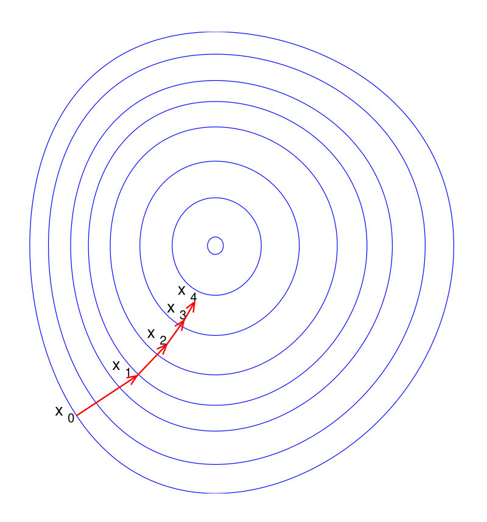
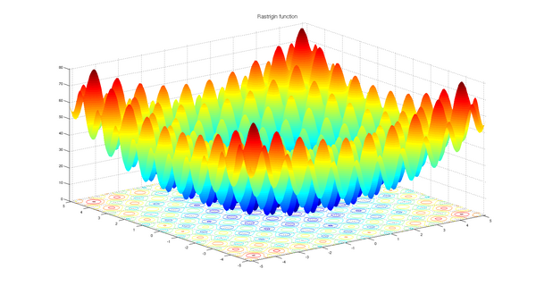
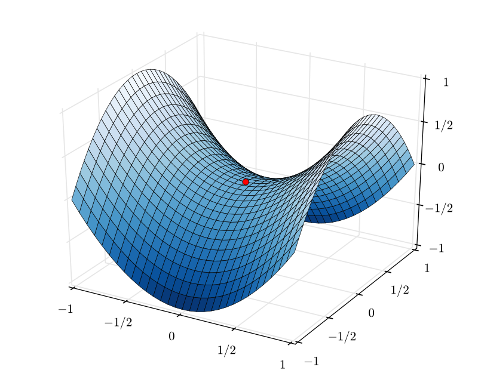

Contents
Basic Optimization Knowledge
A comprehensive academic guide to optimization algorithms in machine learning, from foundational mathematical concepts to advanced techniques.
1. Gradient (Gradient Descent)
The Gradient: Mathematical Foundation
In optimization, we aim to minimize a scalar-valued function \( J(\theta) \), where \( \theta \in \mathbb{R}^d \) represents the model parameters. The gradient \( \nabla_\theta J(\theta) \) is the vector of partial derivatives: \[ \nabla_\theta J(\theta) = \begin{bmatrix} \frac{\partial J}{\partial \theta_1} \\ \frac{\partial J}{\partial \theta_2} \\ \vdots \\ \frac{\partial J}{\partial \theta_d} \end{bmatrix} \]
Geometric Interpretation: The gradient points in the direction of steepest ascent of the function. Conversely, the negative gradient \( -\nabla J(\theta) \) points in the direction of steepest descent. This directional property is the foundation of gradient descent optimization.
Theoretical Foundation: Taylor's Theorem
By Taylor's theorem, for a small step \( \Delta \theta \), the change in the function value is approximately: \[ J(\theta + \Delta \theta) \approx J(\theta) + \nabla J(\theta)^T \Delta \theta + \frac{1}{2} \Delta \theta^T H \Delta \theta \] where \( H \) is the Hessian matrix. For sufficiently small steps, the second-order term can be neglected, giving us the first-order approximation: \[ J(\theta + \Delta \theta) \approx J(\theta) + \nabla J(\theta)^T \Delta \theta \]
To decrease the function value (\( J(\theta + \Delta \theta) < J(\theta) \)), we need \( \nabla J(\theta)^T \Delta \theta < 0 \). Setting \( \Delta \theta = -\eta \nabla J(\theta) \) (where \( \eta > 0 \)) guarantees this, as: \[ \nabla J(\theta)^T (-\eta \nabla J(\theta)) = -\eta \|\nabla J(\theta)\|^2 \le 0 \]
Update Rule
\[ \theta_{t+1} = \theta_t - \eta \nabla_\theta J(\theta_t) \] where \( \eta \) is the learning rate, controlling the step size.Batch vs. Stochastic vs. Mini-batch
In machine learning, the loss function is typically an empirical average over training data: \( J(\theta) = \frac{1}{N} \sum_{i=1}^N \ell(f_\theta(x_i), y_i) \), where \( \ell \) is a per-sample loss. The "true" gradient requires summing over all \( N \) samples.
- Batch Gradient Descent: Computes the gradient using the entire training set. It is deterministic and follows the true gradient trajectory but is computationally expensive for large datasets (\( O(Nd) \) per iteration).
- Stochastic Gradient Descent (SGD): Estimates the gradient using a single sample \( \nabla J_i(\theta) \). This estimator is unbiased (\( \mathbb{E}[\nabla J_i] = \nabla J \)) but has high variance. The noise can help escape shallow local minima but prevents exact convergence to the optimum (the parameters oscillate in a "noise ball").
- Mini-batch Gradient Descent: Uses a batch of \( B \) samples. The variance of the gradient estimate scales as \( 1/B \). This strikes a balance between computational efficiency (GPU parallelism) and update stability.
Example: Linear Regression
For mean squared error loss \( J(\theta) = \frac{1}{N} \sum_{i=1}^N (y_i - \theta^T x_i)^2 \), the gradient is: \[ \nabla_\theta J = -\frac{2}{N} \sum_{i=1}^N (y_i - \theta^T x_i) x_i = -\frac{2}{N} X^T (y - X\theta) \]

2. Momentum & Nesterov Momentum
The Problem with Standard SGD
In regions where the loss surface forms a narrow ravine (high curvature in one direction, low in another), SGD oscillates across the ravine's walls, making slow progress along the valley floor. This is quantified by the condition number of the Hessian: \( \kappa = \lambda_{\max} / \lambda_{\min} \). For ill-conditioned problems (\( \kappa \gg 1 \)), convergence can be extremely slow.
Momentum (Polyak's Heavy Ball)
Momentum methods dampen these oscillations by accumulating a velocity vector \( v_t \), effectively acting as a low-pass filter on the gradient updates. This is modeled after a physical particle with mass moving in a potential field with friction.
Physical Interpretation: Imagine a ball rolling down a hill. The ball accumulates velocity as it rolls, allowing it to overcome small bumps and oscillations. The momentum term \( \gamma v_t \) represents this accumulated velocity from past gradients.
Momentum Update Rule
\[ \begin{aligned} v_{t+1} &= \gamma v_t + \eta \nabla_\theta J(\theta_t) \\ \theta_{t+1} &= \theta_t - v_{t+1} \end{aligned} \] where \( \gamma \in [0, 1) \) is the momentum coefficient (typically 0.9).Mathematical Insight: Expanding the recursion, we see that the current update is a weighted sum of all past gradients: \[ v_t = \eta \sum_{\tau=0}^{t-1} \gamma^\tau \nabla_\theta J(\theta_{t-1-\tau}) \] Gradients from \( \tau \) steps ago are weighted by \( \gamma^\tau \), giving an exponentially decaying influence. This creates directional persistence: if gradients consistently point in the same direction, velocity builds up; if gradients oscillate, they cancel out.
Nesterov Accelerated Gradient (NAG)
NAG improves upon standard momentum by evaluating the gradient at the lookahead position \( \tilde{\theta} = \theta_t - \gamma v_t \). This provides a "correction" term based on the future curvature.
Nesterov Update Rule
\[ \begin{aligned} v_{t+1} &= \gamma v_t + \eta \nabla_\theta J(\theta_t - \gamma v_t) \\ \theta_{t+1} &= \theta_t - v_{t+1} \end{aligned} \]Why is NAG Better? Standard momentum "blindly" follows the accumulated velocity. NAG, however, first looks ahead to where the momentum would take us, then computes the gradient there. This allows NAG to "slow down" before hitting a hill (positive curvature), improving convergence rates for convex functions from \( O(1/k) \) to \( O(1/k^2) \).
Historical Note: Yurii Nesterov introduced this method in 1983, proving it achieves optimal convergence rates for first-order methods on convex smooth problems.
3. Adaptive Learning Rate Methods
Motivation
A single global learning rate \( \eta \) is suboptimal when parameters have vastly different scales or update frequencies. For example, in natural language processing with sparse features (e.g., word embeddings), rare words appear infrequently in training data. A global learning rate would result in tiny, ineffective updates to their embeddings.
Adaptive methods scale the learning rate for each parameter individually, performing smaller updates (low learning rates) for parameters with high cumulative gradients and larger updates (high learning rates) for parameters with small cumulative gradients.
AdaGrad
AdaGrad accumulates the sum of squared gradients \( G_t = \sum_{\tau=1}^t g_\tau^2 \) (element-wise). The update is then scaled by \( 1/\sqrt{G_t} \):
AdaGrad Update
\[ G_t = G_{t-1} + g_t \odot g_t \] \[ \theta_{t+1} = \theta_t - \frac{\eta}{\sqrt{G_t + \epsilon}} \odot g_t \] where \( \odot \) denotes element-wise multiplication, and \( \epsilon \approx 10^{-8} \) prevents division by zero.Limitation: \( G_t \) grows monotonically without bound. Eventually, \( \sqrt{G_t} \) becomes very large, causing the learning rate to vanish, and learning stops prematurely. This is particularly problematic for non-convex objectives.
RMSprop
RMSprop solves AdaGrad's issue by using an Exponential Moving Average (EMA) of squared gradients instead of cumulative sum. This restricts the accumulation to a local window, allowing the algorithm to "forget" ancient history.
RMSprop Update
\[ E[g^2]_t = \beta E[g^2]_{t-1} + (1 - \beta) g_t^2 \] \[ \theta_{t+1} = \theta_t - \frac{\eta}{\sqrt{E[g^2]_t + \epsilon}} g_t \] Typical value: \( \beta = 0.9 \).Adam (Adaptive Moment Estimation)
Adam combines the best of both worlds: momentum (first moment \( m_t \)) and adaptive learning rates (second moment \( v_t \)). It maintains estimates of both the first moment (mean) and second moment (uncentered variance) of the gradients.
Adam Algorithm
\[ \begin{aligned} m_t &= \beta_1 m_{t-1} + (1 - \beta_1) g_t \\ v_t &= \beta_2 v_{t-1} + (1 - \beta_2) g_t^2 \\ \hat{m}_t &= \frac{m_t}{1 - \beta_1^t}, \quad \hat{v}_t = \frac{v_t}{1 - \beta_2^t} \\ \theta_{t+1} &= \theta_t - \eta \frac{\hat{m}_t}{\sqrt{\hat{v}_t} + \epsilon} \end{aligned} \] Standard values: \( \beta_1 = 0.9, \beta_2 = 0.999, \epsilon = 10^{-8} \).Bias Correction: The moving averages \( m_t, v_t \) are initialized at 0, leading to a bias towards 0 early in training (especially when \( \beta_1, \beta_2 \) are close to 1). The correction terms \( \hat{m}_t, \hat{v}_t \) compensate for this initialization bias.
Why Bias Correction Matters
At \( t=1 \), if \( \beta_1 = 0.9 \), then \( m_1 = 0.1 g_1 \), which is 10× smaller than the gradient. Without correction, early steps would be tiny. With correction: \( \hat{m}_1 = \frac{0.1 g_1}{1 - 0.9} = g_1 \).
4. Lipschitz Smoothness
Lipschitz smoothness is a fundamental assumption in convergence analysis of gradient descent. It essentially says that the gradient doesn't change too fast.
Definition
A function \( f \) is \( L \)-smooth if \( \|\nabla^2 f(x)\| \le L \) (the spectral norm of the Hessian is bounded), or equivalently: \[ \| \nabla f(x) - \nabla f(y) \| \le L \| x - y \| \]Implications for Optimization
Quadratic Upper Bound: This property allows us to bound the function with a quadratic: \[ f(y) \le f(x) + \nabla f(x)^T (y-x) + \frac{L}{2} \|y-x\|^2 \] This is a local approximation that's always an upper bound. Minimizing the right-hand side with respect to \( y \) yields: \[ y^* = x - \frac{1}{L} \nabla f(x) \] This suggests the optimal step size is \( \eta = 1/L \).
Convergence Guarantee: For convex \( L \)-smooth functions, gradient descent with \( \eta \le 2/L \) is guaranteed to converge. Steps larger than \( 2/L \) can lead to divergence (overshooting the minimum).
Practical Note: In deep learning, \( L \) is unknown and can be extremely large. This is why adaptive methods (which implicitly estimate local curvature) often outperform SGD with fixed learning rates.
5. Normalization
Normalization techniques stabilize training by re-centering and re-scaling layer inputs. While initially motivated by reducing "Internal Covariate Shift", recent work (Santurkar et al., 2018) suggests normalization's primary benefit is that it significantly smooths the optimization landscape (reduces the Lipschitz constant \( L \)), allowing for higher learning rates and faster convergence.
Batch Normalization (BN)
Batch Normalization normalizes across the batch dimension \( B \). For each feature/channel, it computes the mean \( \mu_B \) and variance \( \sigma^2_B \) over the batch, then normalizes:
Batch Normalization
\[ \hat{x} = \frac{x - \mu_B}{\sqrt{\sigma^2_B + \epsilon}}, \quad y = \gamma \hat{x} + \beta \] where \( \gamma, \beta \) are learnable parameters that restore representational power.Why learnable \( \gamma, \beta \)? Normalization constrains the distribution. The learnable scale and shift allow the network to undo the normalization if necessary (e.g., if the optimal distribution is not zero-mean unit-variance).
Layer Normalization (LN)
Layer Normalization normalizes across the feature dimension \( C \) for a single sample. It computes statistics independently for each sample, making it independent of batch size.
Use Case: LN is ideal for RNNs (where batch size can vary or be 1) and Transformers (where sequence length varies). BN's batch statistics would be unstable in these scenarios.
Batch vs. Layer Normalization
For a tensor of shape \( (B, C, H, W) \) (batch, channels, height, width):
• BN normalizes over \( (B, H, W) \) for each channel independently.
• LN normalizes over \( (C, H, W) \) for each sample independently.
6. Regularization
Regularization constrains the model capacity to prevent overfitting. From a Bayesian perspective, adding a regularization term \( R(\theta) \) to the loss corresponds to Maximum A Posteriori (MAP) estimation with a prior \( P(\theta) \propto \exp(-R(\theta)) \).
L2 Regularization (Ridge)
Adds a penalty proportional to the squared magnitude of parameters: \[ \min_\theta \; J(\theta) + \frac{\lambda}{2} \|\theta\|^2 \] This corresponds to a Gaussian prior \( \theta \sim \mathcal{N}(0, 1/\lambda I) \). It penalizes large weights quadratically, keeping them small but non-zero.
L1 Regularization (Lasso)
Adds a penalty proportional to the absolute magnitude: \[ \min_\theta \; J(\theta) + \lambda \|\theta\|_1 \] This corresponds to a Laplacian prior. The L1 norm's "diamond" geometry (sharp corners at axes) promotes sparsity: many weights are driven exactly to zero, effectively performing feature selection.
Geometric Intuition
Consider constrained optimization: \( \min J(\theta) \) subject to \( \|\theta\|_p \le C \).
• L2 (\( p=2 \)): Constraint is a circle/sphere. The optimal solution is typically on a smooth curve.
• L1 (\( p=1 \)): Constraint is a diamond. The optimal solution often lies at a corner (where some coordinates are zero).
Weight Decay vs. L2: AdamW
In SGD, adding \( \lambda \theta \) to the gradient (L2 regularization) is mathematically equivalent to multiplying \( \theta \) by \( (1-\eta\lambda) \) before the update (weight decay): \[ \theta \leftarrow \theta - \eta (\nabla J + \lambda \theta) = (1-\eta\lambda)\theta - \eta \nabla J \]
However, in Adam, adding \( \lambda \theta \) to the gradient means the decay term gets scaled by \( 1/\sqrt{v_t} \), which is undesirable. AdamW (Loshchilov & Hutter, 2017) decouples the weight decay, applying \( \theta \leftarrow \theta - \eta \lambda \theta \) separately from the adaptive gradient update, leading to better performance.
7. Hessian Matrix
The Hessian \( H \in \mathbb{R}^{d \times d} \) contains second-order partial derivatives: \[ H_{ij} = \frac{\partial^2 J}{\partial \theta_i \partial \theta_j} \] It captures the local curvature of the loss function. While first-order methods (GD, SGD) only use gradient information (slope), second-order methods use the Hessian (curvature).
Eigenanalysis
The eigenvalues \( \lambda_i \) and eigenvectors \( v_i \) of the Hessian reveal the local geometry:
- \( \lambda_i > 0 \): The function curves upward (is convex) in the direction \( v_i \).
- \( \lambda_i < 0 \): The function curves downward (is concave) in direction \( v_i \).
- Positive Definite (all \( \lambda_i > 0 \)): Local minimum.
- Negative Definite (all \( \lambda_i < 0 \)): Local maximum.
- Indefinite (mixed signs): Saddle point.
Condition Number
The condition number \( \kappa = \lambda_{\max} / \lambda_{\min} \) quantifies how "ill-conditioned" the problem is. A high \( \kappa \) means the loss surface is a narrow valley:
• Progress is fast in the \( v_{\max} \) direction (steep slope).
• Progress is slow in the \( v_{\min} \) direction (gentle slope).
For quadratic functions, the convergence rate of GD is \( \left(\frac{\kappa-1}{\kappa+1}\right)^2 \). As \( \kappa \to \infty \), convergence slows to a crawl.
8. Newton's Method & Quasi-Newton's Method
Newton's Method
Newton's method approximates the function locally as a quadratic using the Hessian and jumps to the minimum of that quadratic:
Newton Step
\[ \theta_{t+1} = \theta_t - H^{-1} \nabla_\theta J(\theta_t) \]Intuition: Multiplying by \( H^{-1} \) rescales the gradient to correct for ill-conditioning. If the Hessian is \( H = \text{diag}(\lambda_1, \ldots, \lambda_d) \), then Newton's method takes steps of size \( 1/\lambda_i \) in direction \( i \). This transforms the elliptical contours of the loss into circles, enabling direct descent to the minimum.
Convergence: Near the optimum, Newton's method has quadratic convergence: the error \( \epsilon_{t+1} \approx C \epsilon_t^2 \). This is much faster than the linear convergence of GD (\( \epsilon_{t+1} \approx c \epsilon_t \)).
Constraint: Computing and storing \( H \) is \( O(d^2) \) memory and \( O(d^3) \) computation for inversion. For \( d \approx 10^9 \) (modern LLMs), this is computationally infeasible.
Quasi-Newton (BFGS, L-BFGS)
Quasi-Newton methods approximate \( H^{-1} \) iteratively using the Secant Equation: \[ B_{k+1} (x_{k+1} - x_k) = \nabla f_{k+1} - \nabla f_k \] where \( B_k \approx H_k \). This relates the change in parameters to the change in gradients.
BFGS maintains a full \( d \times d \) matrix approximation. L-BFGS (Limited-memory BFGS) stores only the last \( m \) update vectors (\( m \approx 10-20 \)), reducing memory to \( O(md) \) while retaining most of the benefit.
9. The Shape of the Loss Landscape
The optimization landscape of deep networks is highly non-convex, with countless critical points. Yet, empirical success suggests it has favorable properties.
Key Observations
- No Bad Local Minima: For overparameterized networks (more parameters than data), most local minima have nearly identical loss values close to the global minimum.
- Gradient Independence: In high dimensions, gradients of individual samples are often nearly orthogonal initially, allowing parallel progress across multiple loss directions.
- Mode Connectivity: Different local minima found by SGD can often be connected by a low-loss path (curve in parameter space), suggesting they belong to the same "basin" or connected manifold.

10. Saddle Points & Non-convex Optimization
In high-dimensional spaces, critical points (\( \nabla J = 0 \)) are overwhelmingly likely to be Saddle Points rather than local minima.
Why Saddle Points Dominate
For a critical point to be a minimum, all \( d \) eigenvalues of the Hessian must be positive. If eigenvalues are randomly distributed around zero, the probability of all being positive is approximately \( 2^{-d} \), which vanishes exponentially with dimension.
In contrast, saddle points (with mixed positive and negative eigenvalues) are exponentially more likely. In fact, the "index" (number of negative eigenvalues) of a random critical point is approximately \( d/2 \).
Escaping Saddle Points
Fortunately, "strict" saddle points (with at least one significantly negative eigenvalue) are unstable for Gradient Descent. The noise inherent in SGD helps parameters "fall off" the saddle along the direction of negative curvature. Theoretical results show that SGD escapes strict saddle points in polynomial time.

12. Other Common Optimization Knowledge
Learning Rate Warmup
Adaptive optimizers (like Adam) have unstable variance estimates \( v_t \) at the start of training. Warmup linearly increases the learning rate from a small value to the target \( \eta \) over the first few thousand steps. This allows the second-moment statistics to stabilize before full-scale updates, preventing early divergence.
Gradient Clipping
In RNNs or deep networks, gradients can grow exponentially through backpropagation (the "exploding gradient" problem). Gradient clipping rescales the gradient vector \( g \) if its norm exceeds a threshold \( C \): \[ g \leftarrow g \cdot \min\left(1, \frac{C}{\|g\|_2}\right) \] This preserves the direction but limits the magnitude, preventing unstable updates.
Polyak Averaging (EMA)
Instead of using the final parameters \( \theta_T \), maintain a moving average: \[ \theta_{EMA} = \alpha \theta_{EMA} + (1-\alpha)\theta_t \] where \( \alpha \approx 0.999 \). This acts as a low-pass filter, smoothing out SGD noise and often converging to the center of a flat minimum, improving both convergence and generalization.